Agustín Quiroga
Influencer fitness (+265K). Bajó de 71 a 64,3 kg en 4 meses rumbo al UFA25.
Cris Grosz × Morashop · Personal trainer & preparador físico
Personal trainer y preparador físico deportivo. Cris Grosz preparó atletas, campeones y figuras del país, y creó su propia línea, Grosz Nutrition. Ahora todo en Morashop —con el envío, las cuotas y la confianza de siempre.
 0K
0K
El entrenador
Cristian "Cris" Grosz es personal trainer y preparador físico deportivo. No habla de resultados: los consigue —llevó a sus alumnos de la teoría al podio, incluido un campeón absoluto, y se hizo referente fitness de Argentina con más de 360 mil de comunidad. Ex atleta IFBB de Men's Physique.
Pero lo que lo separa del resto es simple: formula sus propios suplementos. Detrás de Grosz Nutrition hay un atleta que entrena, compite y usa exactamente lo que vende. Su filosofía mezcla cuerpo y cabeza —"se enseña con el ejemplo, no con la palabra"— y esa misma vara es la que pone en cada producto.
Sus alumnos
De la música al deporte y los medios — Cris prepara a las figuras que ves en todos lados.
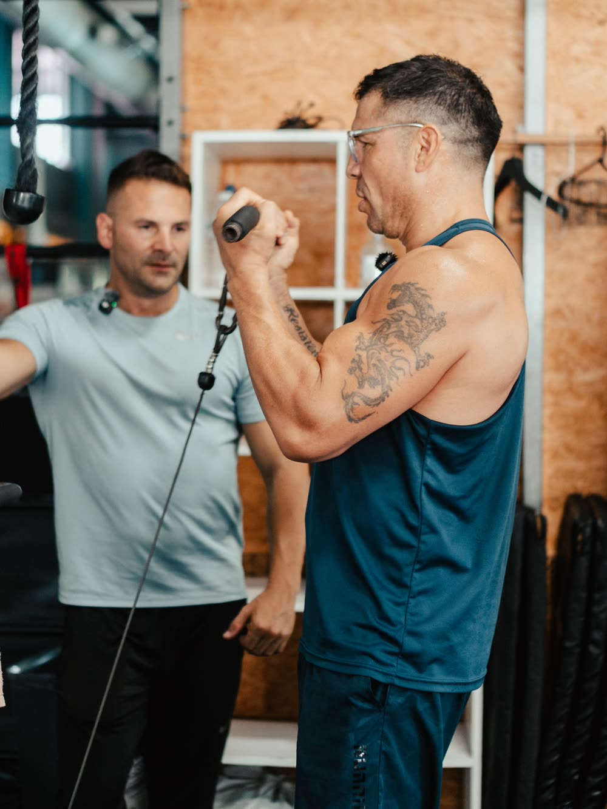
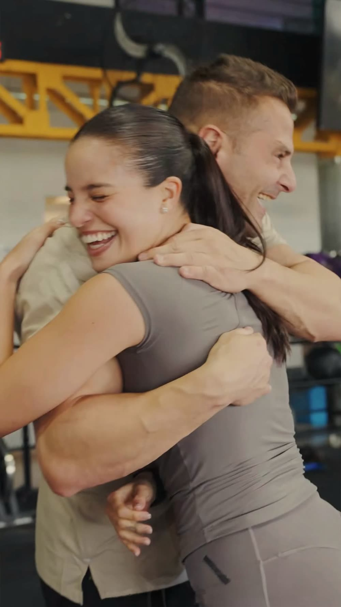
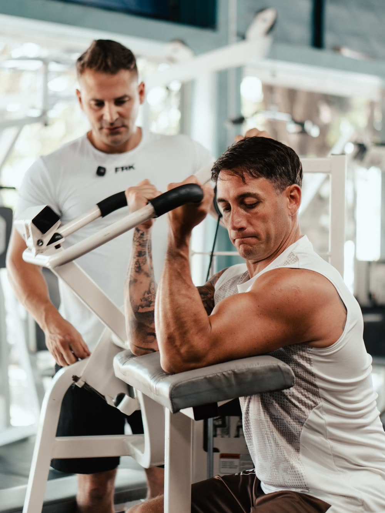
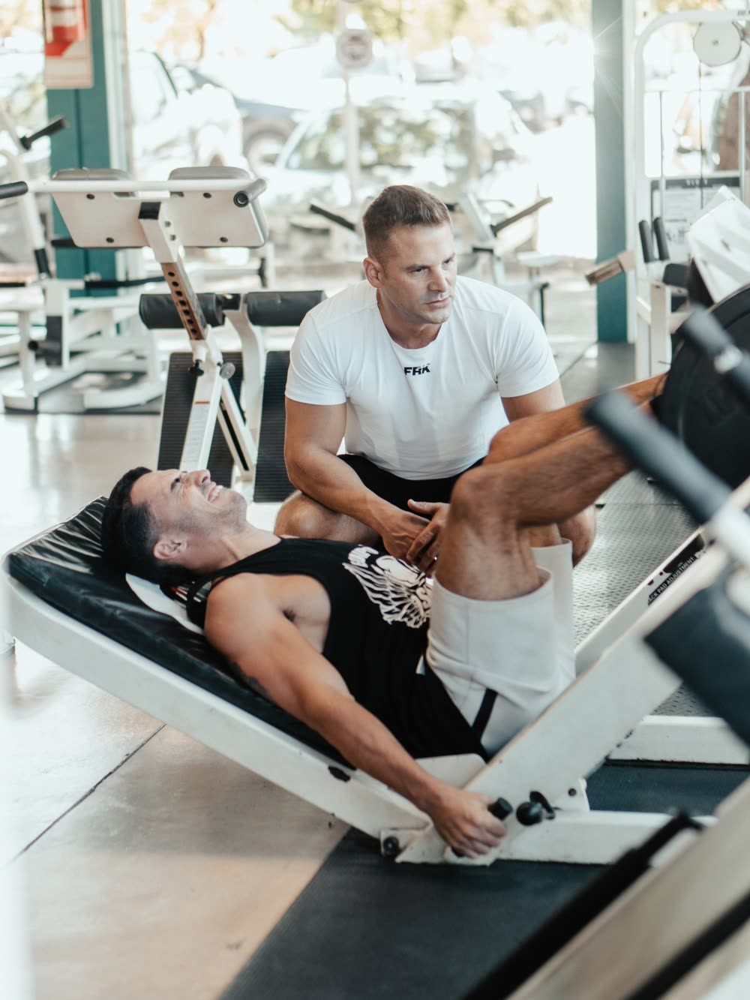
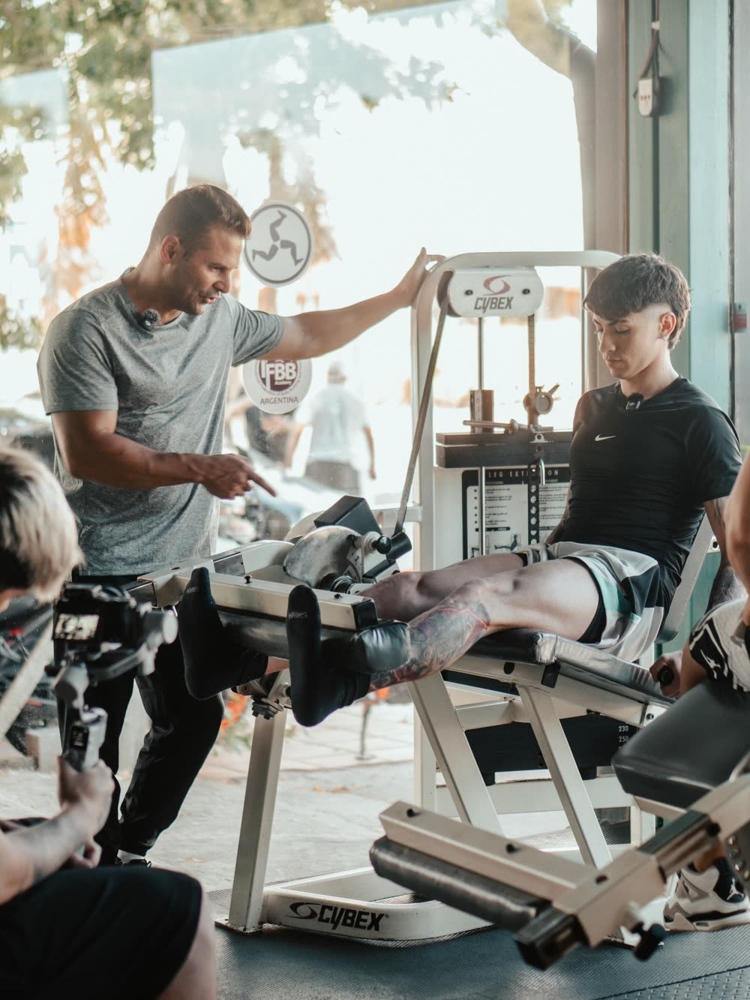
Influencer fitness (+265K). Bajó de 71 a 64,3 kg en 4 meses rumbo al UFA25.
Debutó y ganó su categoría y el Overall —campeón absoluto— en menos de un mes.
Transformaciones extremas preservando masa muscular. Trabajo real, no atajos.
Entrená con Cris
Plan de alimentación y rutina de entrenamiento personalizados, con seguimiento y soporte del equipo de Cris por WhatsApp. Acompañamiento uno a uno.
Acompañamiento real, uno a uno, con el equipo de Cris
El acuerdo
Grosz Nutrition es la línea de Cris. Morashop le pone la logística: llega a todo el país, en cuotas y con la seguridad de siempre.
La línea de Grosz, donde estés. Despacho nacional desde Morashop.
Tus suplementos del mes, sin que se sienta. 15% OFF en efectivo.
El respaldo de Morashop + la firma de un atleta que usa lo que vende.
Suplementación deportiva natural · la línea de Cris
La línea · en vivo 3D
Proteína
86% proteína · 30 servicios
3 cuotas sin interés
Comprar en MorashopSin vueltas ni promesas mágicas. Productos pensados para rendir, recuperar y sostener —la misma vara con la que Cris compite.
Su otra marca
El postre que suma en vez de restar. Helado proteico artesanal de Cris —gelato fit, cremoso, a cucharadas— en 10 sabores.
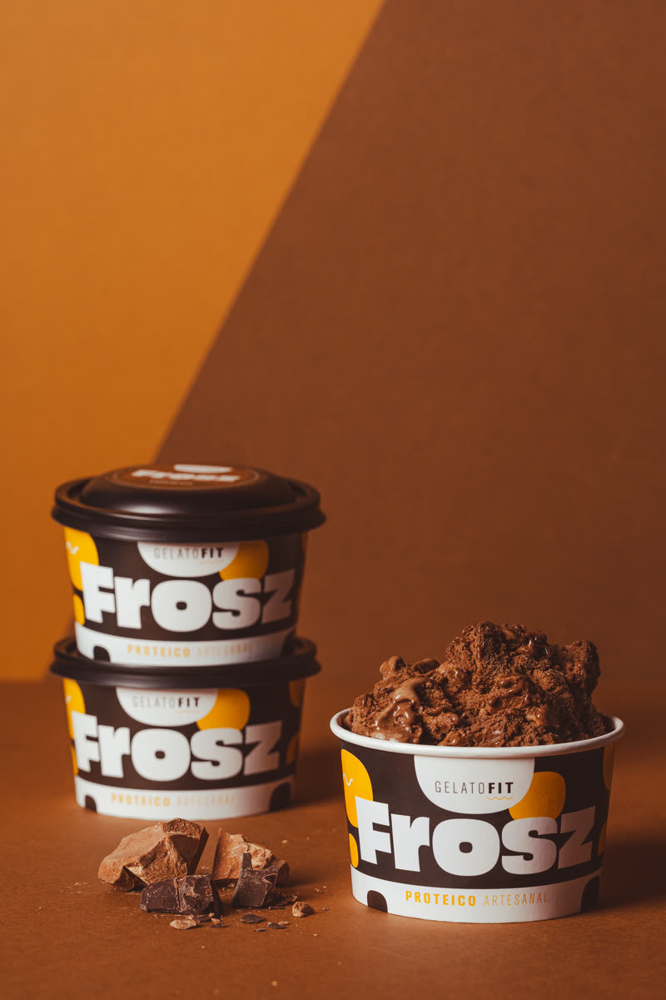
Chocolate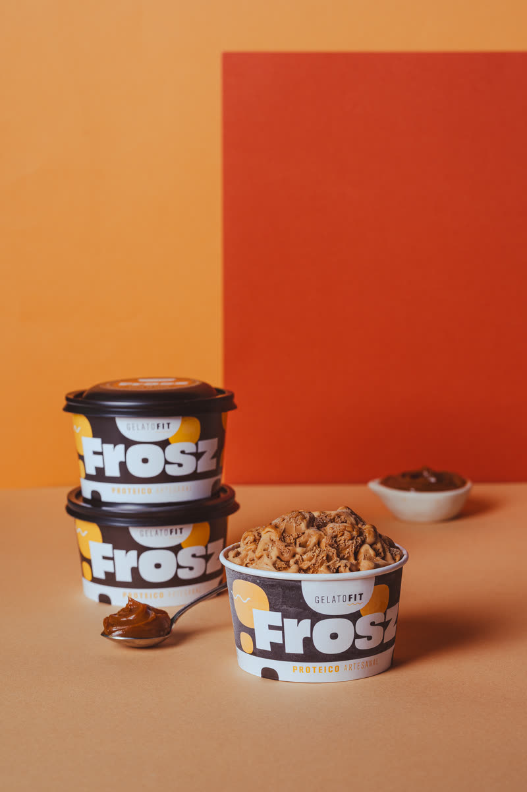
Dulce de Leche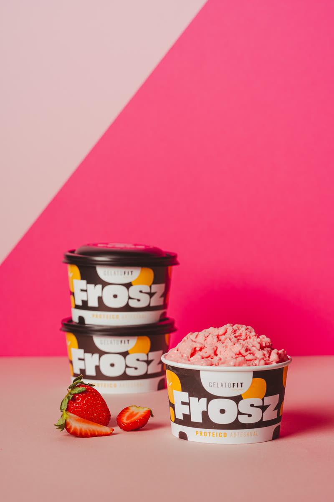
Frutilla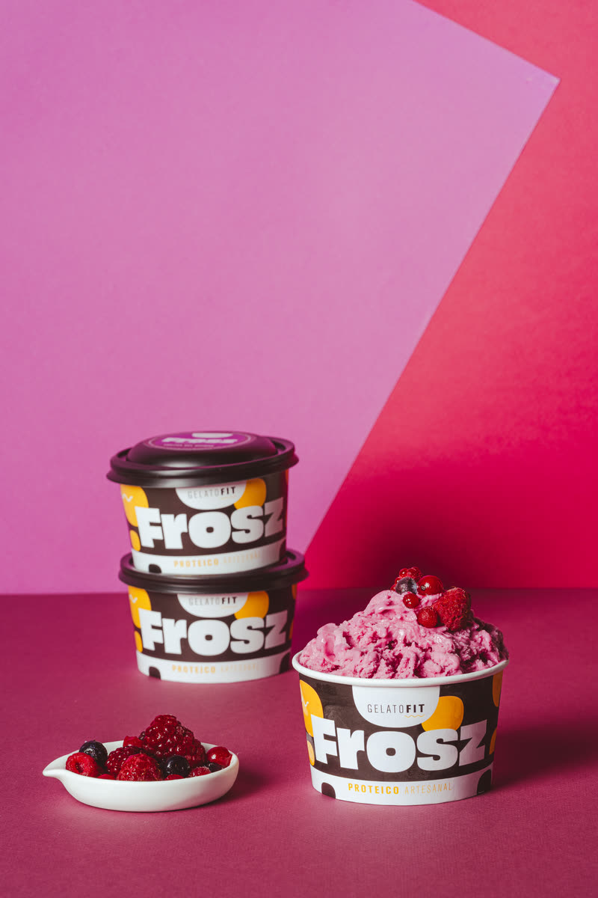
Frutos Rojos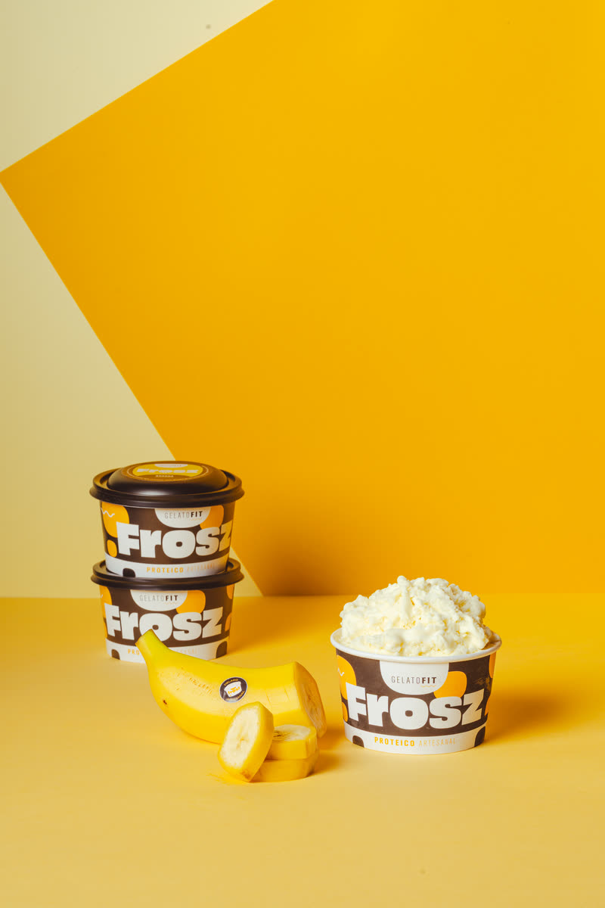
Banana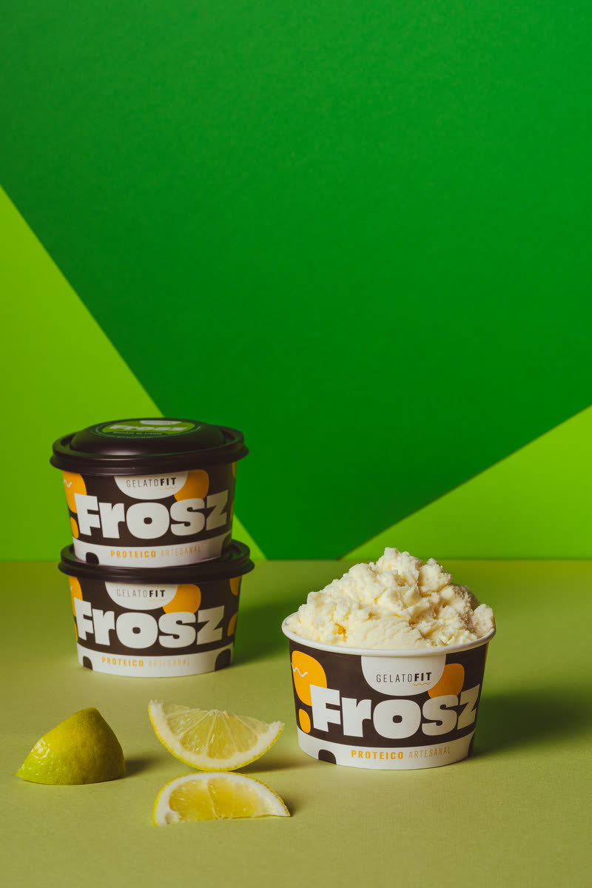
Limón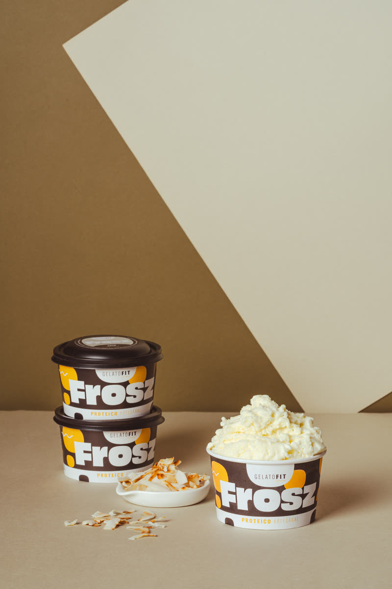
Coco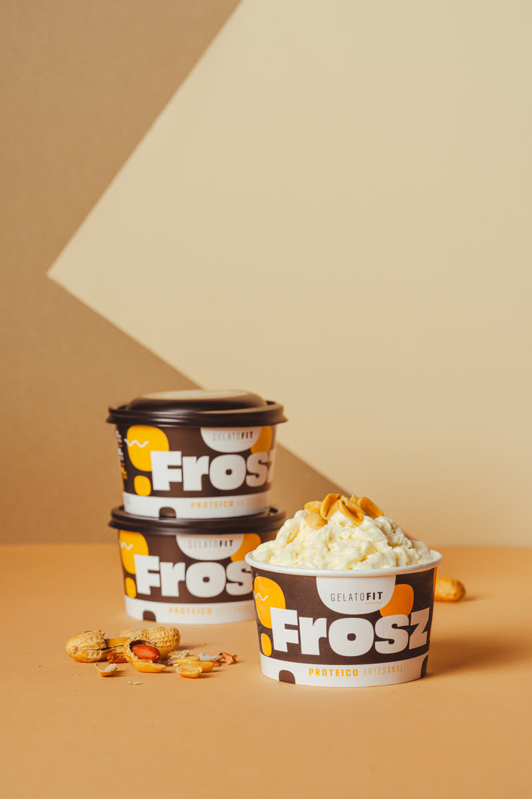
Maní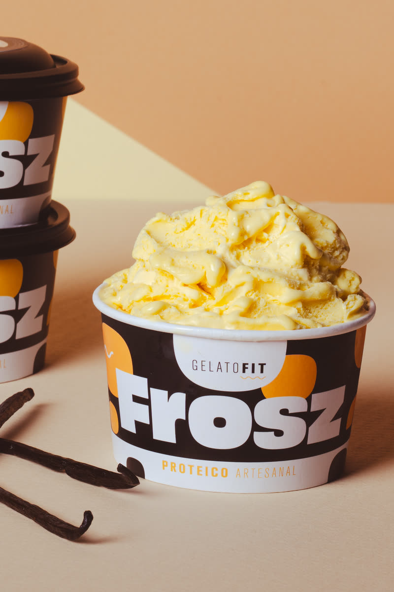
Vainilla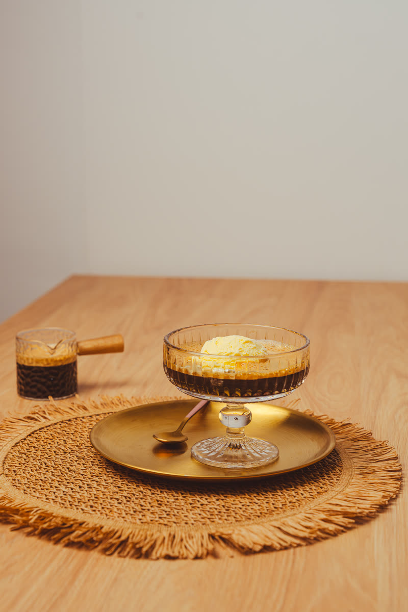
AffogatoPróximamente en Morashop
En cancha
No te pierdas nada
@groszcris
Invertí en tu salud